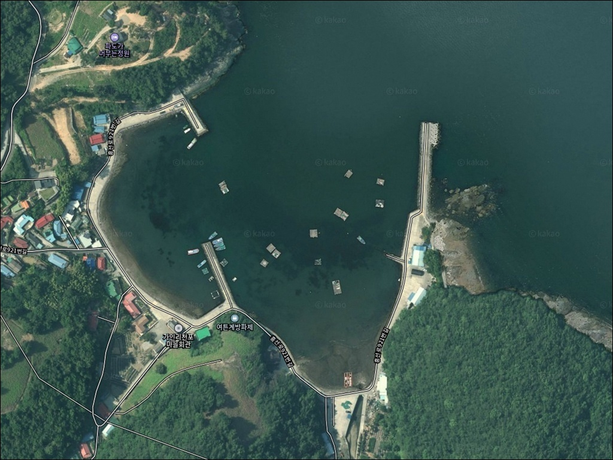
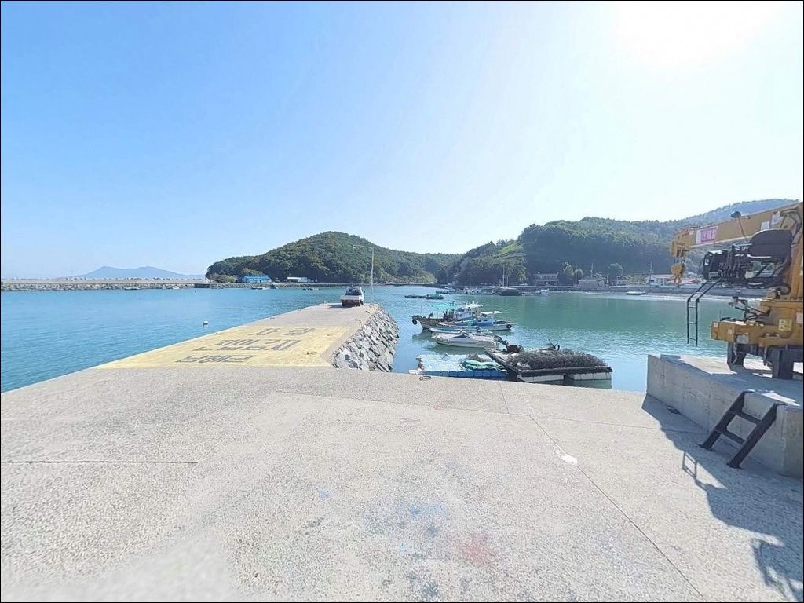
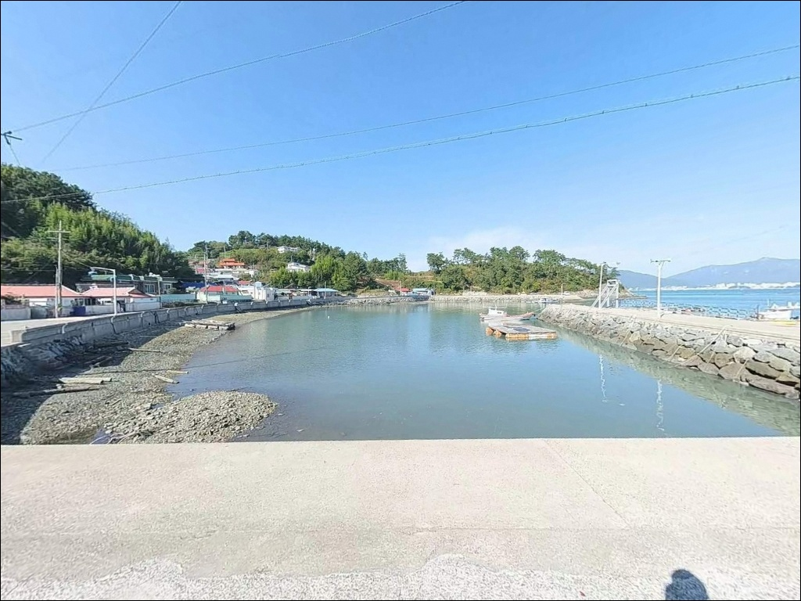
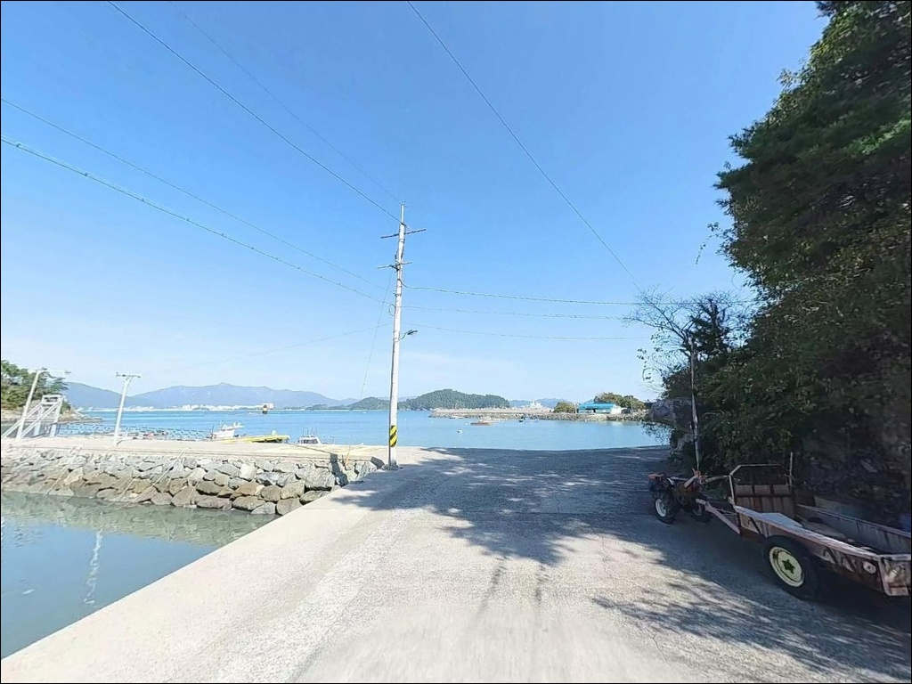
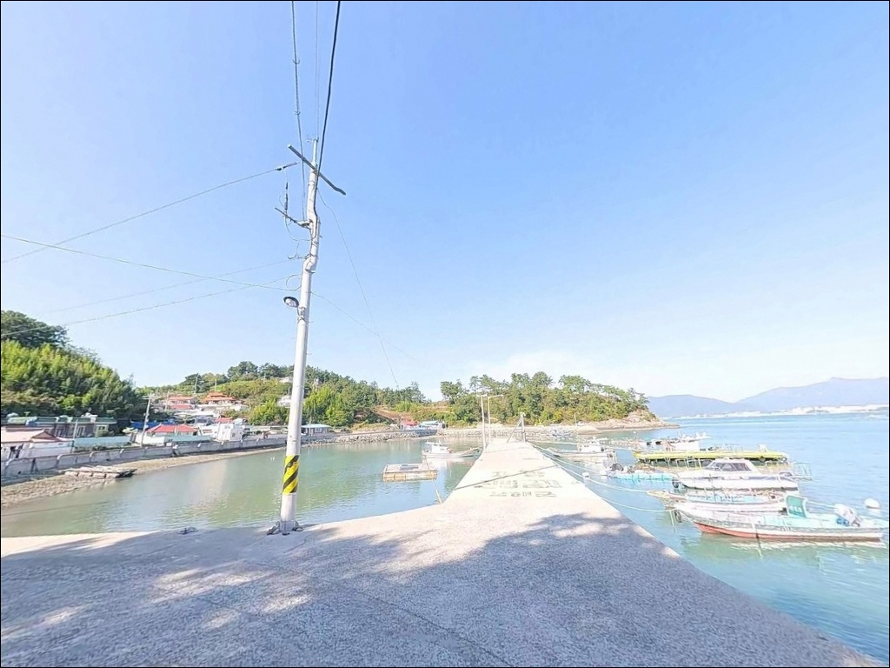
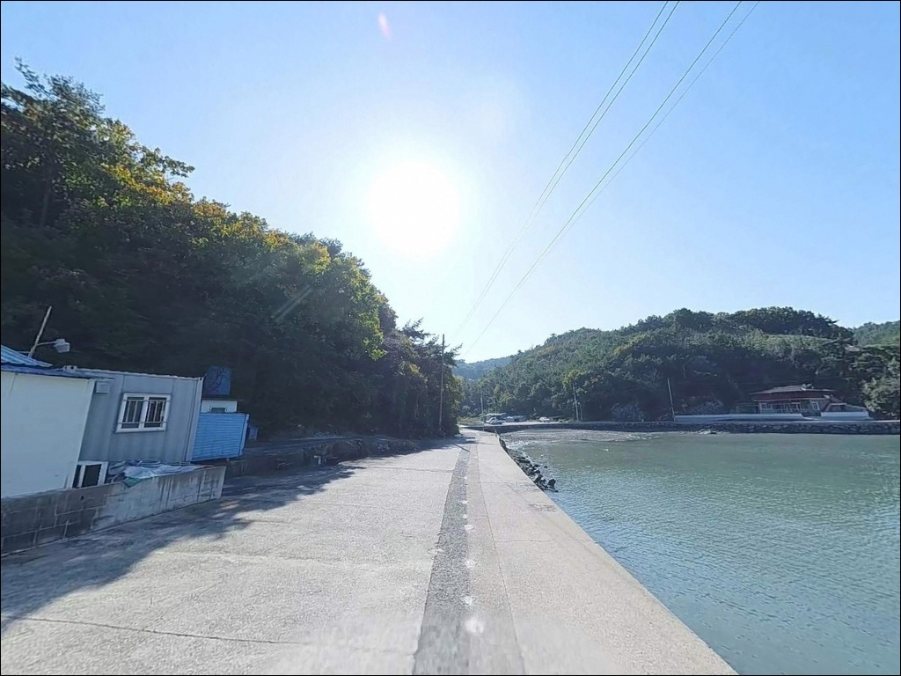
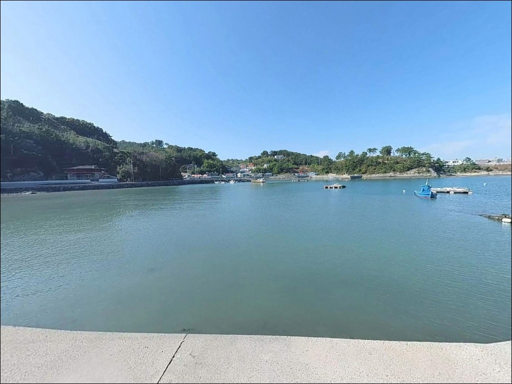
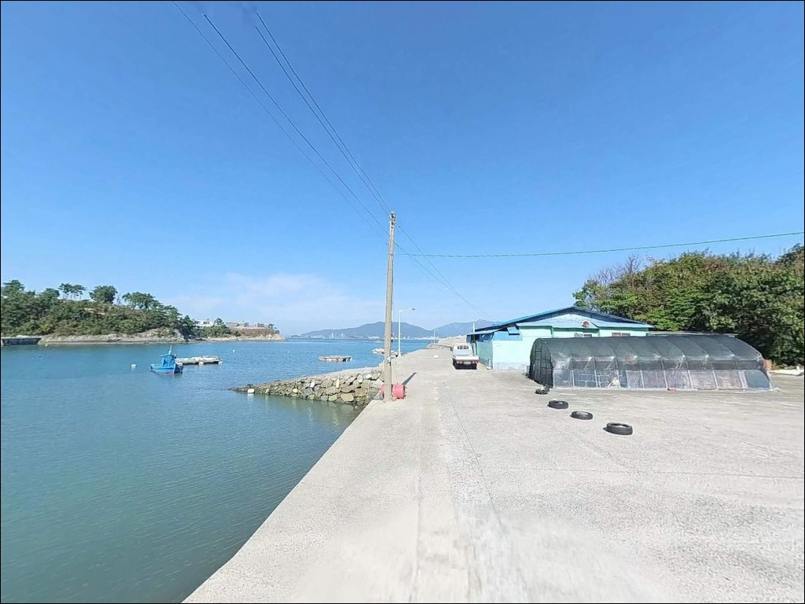
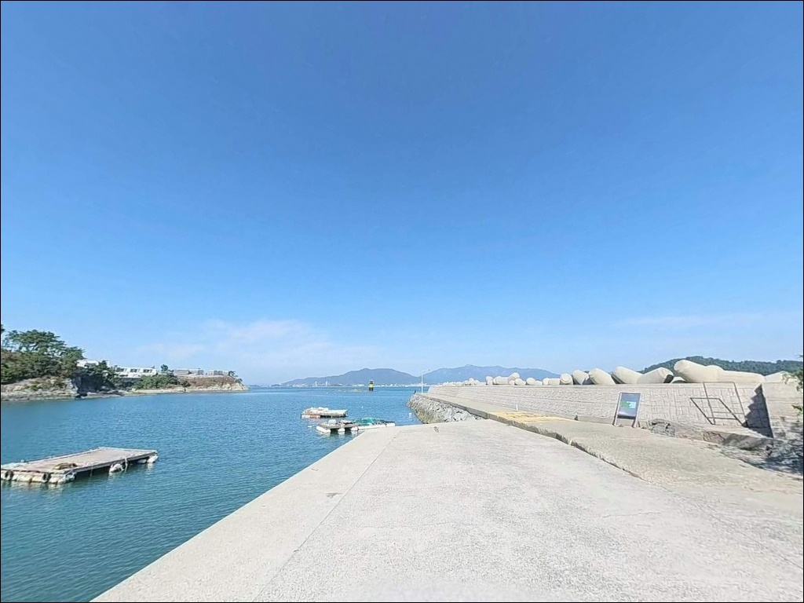

남해 여튼계방파제 릴찌낚시, 정조에는 정적만 흐르다 중들물에 터진 입질
이 페이지에는 광고(제휴 링크 포함)가 있으며, 광고 링크를 통해 구매하면 운영자가 판매 수익 또는 수수료를 받을 수 있습니다. 포인트 사진: 카카오맵 스카이뷰·로드뷰. 이 페이지의 지도·사진 이미지는 카카오맵의 실제 서비스 이미지와 다를 수 있습니다.


포인트 안내
여튼계방파제
경남 남해군 창선면 가인리 10-6
창선도 내만 방파제는 외해 직격형이 아니라
조류가 만 입구를 돌아 들어오는 구조여서,
물때를 모르고 들어가면
조류가 완전히 멎은 정조 타임만 맞닥뜨리게 됩니다.
중들물·중썰물 타이밍을 놓치면
방파제 머리 자리도 힘을 잃는 포인트입니다.
여튼계방파제는 창선도 북쪽 끝
가인리 해안에 자리 잡은 소형 어촌 마을 방파제입니다.
가인리 공룡발자국화석산지 바로 옆
완만한 내만을 감싸는 구조로 조성되어 있으며,
방파제 외항 쪽으로 여밭과 암반 지형이 발달한
릴찌낚시·루어낚시 복합 포인트입니다.
이 글은 여튼계방파제의
진입 동선, 차박 가능 여건, 물때 판단 기준,
낚시 스타일별 공략 조건에 집중합니다.
조황 단정이나 특정 어종 보장은
이 글의 범위에 포함되지 않습니다.

1. 진입 동선과 포인트 접근성
여튼계방파제는 창선면 가인리 마을길
끝단 해안도로에서 바로 연결되는 구조입니다.
승용차 기준으로 방파제 입구까지
차량 통행이 가능한 폭의 도로가 확보되어 있습니다.
단, 마을 내부 구간 일부에서 도로 폭이
일반 승용차 기준으로 겨우 교행이 되는 수준으로
좁아지는 구간이 있습니다.
대형 SUV나 캠핑카를 가져갈 경우,
방파제 바로 앞까지 진입하기보다
마을 입구에서 먼저 도로 상황을 확인하는 편이 좋습니다.
마을 포구 주변은 소형 어선 계류와
주민 차량 통행이 동시에 이뤄지는 공간이어서
회차 공간이 넉넉하지 않은 구조입니다.
주차 거점은 방파제 인근 마을 도로변 공터보다
공룡발자국화석산지 주차장을 우선으로 삼는 편이 안정적입니다.
공룡화석지 주차장에서 방파제까지는
해안 데크로드와 계단을 이용해
도보로 이동할 수 있는 동선이 갖춰져 있습니다.

2. 차박 환경과 야간 체류 여건
공룡발자국화석산지 주차장은
야간에 방문객이 빠지면
인구 밀집도가 낮은 어촌 분위기로 바뀝니다.
어선 출입과 일부 주민 차량 외에는
차량 통행이 거의 없는 조용한 야간 환경이 형성되어
낚시 후 하룻밤 머무는 용도로는 어울리는 구조입니다.
포구 및 방파제 일대는 어선 출입을 위한
기본 조명 시설이 일부 있으나,
방파제 끝단은 조명 사각지대가 발생하는 구간입니다.
개인 헤드랜턴은 필수이며,
예비 배터리도 함께 챙겨야 하는 야간 환경입니다.
바다 건너 사천 방향 야경이 조망되는 위치라
분위기 자체는 나쁘지 않습니다.
다만 차박을 메인 목적으로 삼기보다
낚시 후 체류 용도로 접근하는 편이
이 포인트의 여건에 잘 맞습니다.


3. 주변 편의시설 및 인프라 현황
가인리 방파제 반경 1km 이내에는
편의점이나 식당을 기대하기 어렵습니다.
공룡발자국화석산지 주차장에
공중화장실이 설치되어 있어
출조 전·후 화장실 이용은 가능합니다.
식수·얼음·낚시 소품은 출발 전에 완비해야 합니다.
창선면 중심지 방향으로 차량 이동
10~15분 거리에 편의점과 식당이 모여 있는
생활 인프라 구역이 형성되어 있습니다.
부족한 채비나 먹거리는 이 구간에서
보급하는 동선이 효율적입니다.
창선면 지족 방향으로 이동하면
현지 낚시점에서 채비 조달과
조황 정보 문의가 가능합니다.
출조 전 창선면 일대 조황 검색을 꼭 해보시길 권합니다.

4. 낚시 전날 미리 챙겨야 할 준비사항
여튼계방파제 방문 전에
가장 먼저 확인할 것은 물때입니다.
내만형 구조의 이 포인트는
조류가 흐르는 중들물·중썰물 타임에
방파제 외항 끝단 자리의 낚시 여건이 살아납니다.
바다타임에서 창선면 기준 물때를 미리 확인하고
출발 시각을 조류 타임에 맞추는 것이 기본 전략입니다.
섬 지역 특성상 기상 변화가 빠릅니다.
기상청 해상특보와 파고 예보는
전날 저녁과 당일 아침 두 차례 확인하는 것이
포인트 허탕을 막는 기본 준비입니다.
여밭·암반 지형이어서 채비 손실이 생길 수 있으니
여분 채비는 넉넉하게 준비하는 편이 좋습니다.
소형 어촌 포구이므로
어선 동선과 계류 구역을 가리지 않는 자리에
차량을 세우는 것이 기본 매너입니다.
인근 공룡발자국 화석지 보호 구역과 인접해 있어
낚시 쓰레기 수거도 특히 철저히 해야 합니다.

5. 외항 끝단 자리가 달라지는 지형 조건
여튼계방파제는 가인리 해안이
완만하게 굽어진 만 형태를 품은 구조입니다.
방파제는 이 내만의 소형 포구를 감싸며
직선으로 뻗은 형태이며,
방파제 외항 쪽으로
수중여와 암반이 산재한 여밭 지형이 펼쳐집니다.
바닥은 여밭과 암반 혼합형이고,
방파제 외항 끝단에서는 수심이
완만하게 깊어지는 구조입니다.
내항 쪽은 잔잔하고 수심이 비교적 얕아
발앞 생활낚시 구간으로 나뉘고,
외항 쪽은 본류 채널 영향으로
조류 흐름이 살아 있는 릴찌낚시 구간으로 구분됩니다.
만 입구 방향으로 흐르는 조류 패턴은
물때에 따라 방향이 바뀌는 전형적인 내만형 흐름입니다.
방파제 머리에서 외항 방향 채비를 태우는 방식이
이 포인트의 지형 조건에 가장 잘 맞습니다.
출조 전에 가인리 인근 최신 조황 검색을
꼭 한 번 확인해 보시기 바랍니다.
방파제 외항 끝단은 조류 변화를 타는 릴찌낚시에서
감성돔·벵에돔 조과가 달라지는 자리입니다.


6. 여밭과 조류를 활용하는 낚시 스타일
이 포인트에서 가장 잘 어울리는 낚시는
감성돔·벵에돔 릴찌낚시입니다.
방파제 외항 끝단 머리 부분에서
채비를 조류에 태워 여밭 경계를 따라 흘리는 방식이
이 지형 조건과 맞습니다.
여름~가을은 벵에돔, 늦가을~초겨울은 감성돔을
우선 노려볼 수 있는 시즌 패턴입니다.
볼락 라이트게임은 야간 입장에 적합합니다.
방파제 구조물과 석축 사이 공간은
볼락이 자리를 잡기 좋은 조건이며,
소형 지그헤드와 웜 채비로
방파제 벽면과 석축 경계를 천천히 탐색하는 방식이
야간 마릿수 조과로 이어지는 구간입니다.
내항 쪽에서는 민장대 또는 가벼운 찌 채비로
발앞 생활낚시를 즐기는 방식도 가능합니다.
학꽁치, 전갱이, 노래미 등
내만성 어종이 가까운 수심층을 이용하는 구간이며,
채비를 멀리 보내기보다
방파제 벽면 발치를 노리는 방식이
이 구간의 기본 공략법입니다.

7. 대안 포인트와 플랜 B 동선
여튼계방파제가 기대에 못 미치거나
주차 여건이 여의치 않다면
같은 해안선 북쪽 방향으로
고두끝바리 일대 갯바위·방파제 포인트가
첫 번째 대안입니다.
벵에돔·감성돔을 노리는 찌·루어낚시 패턴이
가인리와 유사한 해역 조건에서 이어집니다.
창선면 중심부 방향으로 이동하면
적량방파제와 단항마을방파제가 있습니다.
차량 접근이 안정적이고
포인트 폭이 넓어 인원 분산이 가능하며,
처음 창선면 동부를 탐색하는 경우라면
단항마을방파제를 기점으로 잡고
여튼계방파제를 병행 탐색하는 동선이 효율적입니다.
해창방파제도 창선면 동쪽 라인의
대체 포인트로 활용할 수 있습니다.
창선도 동부 해안에는 방파제·갯바위 포인트가
띠를 이루고 있어 조황 상황에 따라
이동 대응이 가능한 권역입니다.
공룡발자국화석산지 주차장은
여튼계방파제 출조의 현실적인 거점 주차지입니다.

조용히 방파제 머리에 서고 싶은
낚시인에게 맞는 자리입니다
릴찌낚시로 감성돔·벵에돔을 노리거나
야간에 볼락 라이트게임을 즐기는 낚시인이라면
여튼계방파제의 외항 여밭 구조는
지형 조건이 잘 맞는 편입니다.
창선면 동부 해안의 여러 방파제 중에서
상대적으로 덜 알려져 있어
혼잡하지 않은 환경에서 낚시를 즐길 수 있는 포인트입니다.
반면 편의시설이 없는 어촌 포구이고
진입로가 좁아 대형 차량 진입에 주의가 필요합니다.
물때를 맞추지 않고 정조 타임에 들어가면
방파제 외항 자리가 힘을 잃는 구조이므로
물때 확인, 자급 준비, 진입로 사전 점검,
이 세 가지를 갖추고 가는 것이 기본 전제입니다.
사천 앞바다가 조망되는 조용한 어촌 포구에서
낚시를 마치고 하룻밤 머무는 차박 여행자라면,
공룡발자국 화석지 주차장을 거점 삼아
낚시와 차박을 함께 즐길 수 있는 출조가 됩니다.